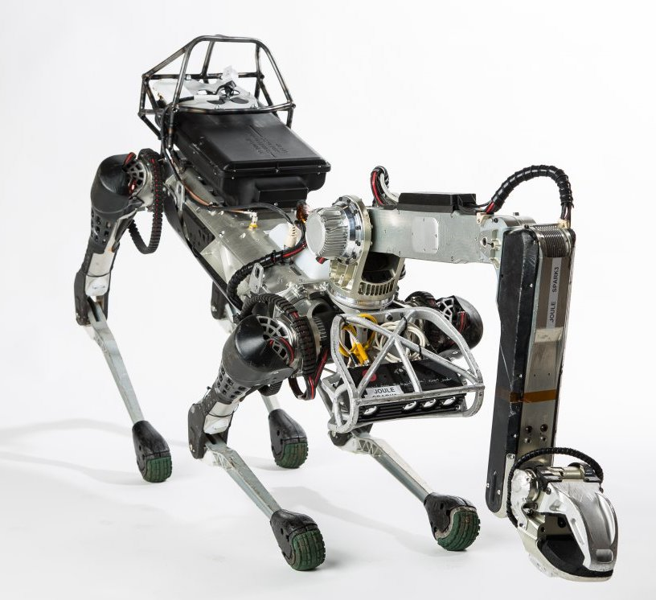
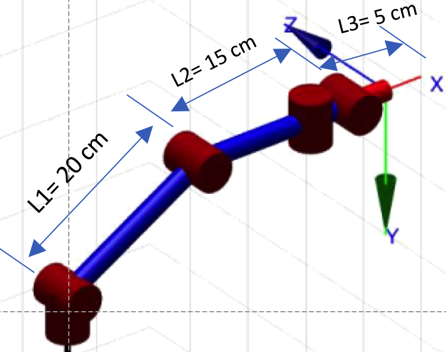

	<div class="about">
			<h1>Small Size Robot Arm (mini-project)</h1>
		
Some example to inspire your design:
<br>
<iframe width="600" height="400" src="https://www.youtube.com/embed/tf7IEVTDjng" frameborder="0" allowfullscreen>Eng. Amr Zamel Tutorial playlist</iframe>
<br>
This is from the famous BostonDynamics <a target="_blank" class="noCrossRef" href="https://www.bostondynamics.com/spot-mini">SpotMini</a> robot

<br>

<br>
The desired dimensions of the robot arm and its main construction:
<br>

</div>
